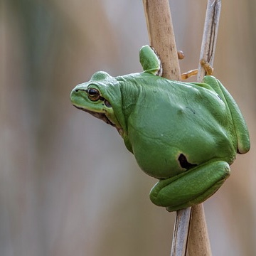
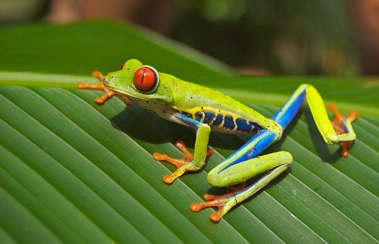

1. Płazy definicja
Płazy (Amphibia) – gromada zmiennocieplnych kręgowców z grupy czworonogów. Zamieszkują różnorodne siedliska, większość gatunków żyje na lądzie, w gruncie, na drzewach bądź w wodach słodkich. W rozwoju przechodzą stadium larwalne, w którego czasie prowadzą wodny tryb życia, choć niektóre gatunki wykształciły adaptacje behawioralne pozwalające ominąć to ograniczenie. Kijanki przechodzą przeobrażenie, w którego wyniku oddychająca skrzelami larwa staje się dorosłym osobnikiem oddychającym płucami. Wymiana gazowa następuje również przez skórę. Niektóre niewielkie ogoniaste, jak i bezogonowe nie mają płuc i prowadzą całą wymianę gazową przez skórę. Pokrojem ciała przypominają gady, jednak w odróżnieniu od nich nie mają błon płodowych w rozwoju ontogenetycznym, w związku z czym ich rozwój musi przebiegać w środowisku wodnym. W związku ze swym rozwojem złożonym i przepuszczalną skórą płazy są wrażliwe na zmiany warunków siedliskowych i zanieczyszczenie środowiska, dlatego stanowią dobre gatunki wskaźnikowe. W ostatnich dekadach odnotowano drastyczny spadek liczebności oraz wyginięcia wielu gatunków płazów na całym świecie.
{kind=link}
2. Płazy cechy budowy ciała
Skóra
Pokrycie ciała obejmuje pewne elementy typowe dla kręgowców lądowych, jak obecność wysoce zrogowaciałych warstw zewnętrznych, odnawiających się okresowo w procesie linienia kontrolowanym przez przysadkę i tarczycę. Miejscowe zgrubienia, często zwane brodawkami, występują pospolicie, np. u ropuchowatych. Warstwa zewnętrzna podlega okresowemu zrzucaniu w mniejszym bądź większym stopniu w jednym kawałku, w przeciwieństwie do ptaków czy ssaków, zrzucających skórę w płatach. Płazy często zjadają swą starą skórę[43]. Wyjątek stanowią płazy beznogie. Wytwarzają one zbudowane z kolagenu i zmineralizowane[20] łuski skórne osadzone w skórze właściwej, pomiędzy fałdami. Podobieństwo do łusek ryb kostnych jest jednak w znacznej mierze powierzchowne. Jaszczurki i niektóre płazy bezogonowe mają nieco podobne osteodermy tworzące kostne depozyty w skórze właściwej, nie są to jednak cechy homologiczne a analogiczne, powstałe w wyniku konwergencji. Podobne struktury powstały niezależnie w różnych liniach kręgowców[62]. Jasne barwy Hyperolius viridiflavus ostrzegają przed toksynami tego gatunku Skóra płazów przepuszcza wodę. Bierze także udział w wymianie gazowej. Pozwala to dorosłym płazom oddychać bez wynurzania się na powierzchnię wody, a nawet trwać w stanie hibernacji na dnie zbiornika[43]. By zabezpieczyć cienką i delikatną skórę przed wysychaniem, Amphibia wytworzyły gruczoły śluzowe, głównie na głowie, grzbiecie i ogonie. Struktury te produkują wydzieliny utrzymujące powłokę ciała wilgotną. Poza tym wiele gatunków ma ziarniste gruczoły tworzące niesmaczne lub toksyczne substancje. Niektóre płazie toksyny mogą nawet spowodować zgon człowieka[63]. Główne gruczoły produkujące toksyny, gruczoły przyuszne, czyli parotydy, wytwarzają neurotoksynę zwaną bufotoksyną. Leżą one za uszami bądź wzdłuż grzbietu przedstawicieli rzędu bezogonowych, za oczami przedstawicieli rzędu ogoniastych lub na górnej powierzchni ciała płazów beznogich[64]. Z uwagi na obecność dużych worków limfatycznych skóra Anura słabo przylega do ciała[39]. Kolor skóry płazów zależy od trzech warstw komórek zawierających pigment, zwanych chromatoforami. Wspomniane 3 warstwy składają się z usytuowanych najgłębiej melanoforów, leżących pośrodku guanoforów, bogatych w ziarnistości i produkujących niebieskozielony barwnik, oraz lipoforów tworzących najbardziej powierzchowną warstwę żółtą[65]. Inny podział mówi o melanoforach, ksantoforach (żółte), erytroforach (czerwone), leukoforach (białe), cyjanoforach (niebieskie) i irydoforach (srebrzyście lśniące kryształtki guaniny)[66]. Osobniki wielu gatunków potrafią zmieniać barwę. Przemianę rozpoczyna hormon wydzielany przez przysadkę. Inaczej, niż u ryb kostnych, układ nerwowy nie kontroluje zmiany koloru bezpośrednio. Zmiana następuje też wolniej, niż u ryb. Jaskrawe ubarwienie oznacza, że zwierzę jest toksyczne, ostrzega przed tym drapieżniki[65]. Często występuje też ubarwienie maskujące, zielone u żab zielonych, brunatne i płowe u żaby moczarowej czy ropuchy paskówki. Niekiedy spotyka się też albinosy, czyli osobniki pozbawione ciemnego barwnika[38]. Jest to u płazów cecha dziedziczona recesywnie, związana z brakiem w skórze czarnego barwnika (melaniny).
Szkielet
Szkielet płazów jest strukturalnie homologiczny ze szkieletami innych czworonogów, występując w licznych wariacjach. Kości cechują się dużym udziałem przestrzeni pustych i przez to niewielką masą. Układ kostno-mięśniowy jest silny, by wesprzeć głowę i ciało. Kręgi łączą się ze sobą poprzez zachodzące na siebie wyrostki. Dobrze rozwinięta obręcz miednicza wiąże się z kręgosłupem parą żeber krzyżowych. Kość biodrowa opada w kierunku przednim i ciało zwierzęcia znajduje się bliżej podłoża, niż w przypadku ssaków[69]. Szkielet ten wyróżnia się dużą ilością chrząstki. U ropuszkowatych czy grzebiuszkowatych nie dochodzi do kostnienia głów kości długich przez całe życie płaza[38]. Czaszkę określa się jako płaską i szeroką, szczególnie w okolicy potylicznej. Łączy się ona z kręgosłupem, dokładniej z pierwszym kręgiem odcinka szyjnego, dzięki dwóm kłykciom potylicznym. Jest to połączenie nieruchome, znacznie ogranicza to ruchy głowy. Obrotnik (specjalny drugi kręg szyjny) nie występuje[38]. Kostnienie czaszki przebadano dokładnie u nielicznych gatunków, między innymi u kumaka dalekowschodniego. Zaobserwowano różnice międzyosobnicze pomiędzy kolejnością kostnienia poszczególnych kości. Etapu kostnienia czaszki nie można też wywnioskować ze stadium rozwoju larwy. Zdarza się, że osobnik morfologicznie bardziej rozwinięty ma mniej kości, niż słabiej rozwinięty. Występują też różnice pomiędzy poszczególnymi rodzinami płazów. Różnice sięgają też ilości kości spotykanych u dorosłych płazów. Kumak ma ich 17, podczas gdy żaba czy ropucha mają ich 18. U kumaka nie występuje kość podniebienna ani strzemiączko, ma on za to niespotykaną u innych płazów kość interfrontal[70]. Kręgi określa się jako dwuwklęsłe, proceliczne bądź opistoceliczne. Odcinek krzyżowy zazwyczaj obejmuje pojedynczy kręg[71]. Szkielet Ceratophrys cornuta Płazy, z wyjątkiem przedstawicieli rzędu beznogich i kilku gatunków Caudata o zredukowanych kończynach, mają 4 kończyny. U większości płazów dłoń kończy się czterema placami, a stopa – pięcioma. Nie występują pazury. Niektóre płazy ogoniaste wykazują mniejszą liczbę palców. Amfiumowate to przypominające z wyglądu węgorza zwierzęta o niewielkich, krótkich i grubych łapach. Syrenowate to z kolei wodne Caudata o krótkich i grubych przednich kończynach, niemające tylnych łap. Przedstawiciele płazów beznogich ryją w ziemi, podobnie jak to czynią dżdżownice. Strefy skurczów mięśni przesuwają się wzdłuż ciała. Na powierzchni bądź w wodzie poruszają się poprzez faliste ruchy ciała z boku na bok[72]. U Anura tylne kończyny są większe od przednich; szczególnie widoczne jest to u gatunków, których głównym sposobem poruszania się jest skakanie bądź pływanie. U gatunków poruszających się w sposób kroczący oraz u biegających tylne kończyny nie są aż tak wielkie. Zwierzęta ryjące mają zwykle krótkie łapy i szerokie ciała. Stopy przystosowały się do trybu życia. Wykształciły błonę pławną przydatną przy pływaniu, szerokie przylgi na opuszkach służące wspinaczce lub skeratynizowane guzki na tylnych łapach ułatwiające kopanie. Przedstawiciel grupy bezogonowych bowiem kopią w glebie tyłem[69]. Samce mają na spodniej stronie dłoni modzele godowe, którymi przytrzymują samice. Z kolei modzele piętowe występują u obu płci[46]. U większości Caudata kończyny są krótkie, w większym bądź mniejszym stopniu tej samej długości, wyrastające z tułowia pod właściwym kątem.
Układ oddechowy
Płazy wykształciły więcej różnorodnych struktur służących wymianie gazowej (skrzela zewnętrzne, skrzela wewnętrzne, płuca, skóra), niż jakakolwiek inna gromada kręgowców[101]. Stadium larwalne prowadzi zazwyczaj wodny tryb życia, dlatego też do oddychania wykorzystuje skrzela. Leżą one w odpowiedniej komorze/komorach skrzelowych czy wieczkowych lub występują skrzela zewnętrzne. Prowadzą one wymianę gazową poprzez czerpanie tlenu z obmywającej je wody, która dostaje się do organizmu przez jamę ustną lub nozdrza, pompowana ruchami gardła. Tryskawka służy wypuszczaniu wody na zewnątrz[101]. Skrzela występują także u zwierząt, u których pływająca w wodzie larwa nie występuje. Ensatina należąca do salamander bezpłucnych przechodzi rozród bezpośredni, a w jej zarodku występują duże, mięsiste skrzela[102].  Zazwyczaj skrzela zanikają podczas metamorfozy. Wyjątki stanowią odmieńce amerykańskie z rodzaju Necturus. Także wśród gatunków, których przedstawiciele normalnie tracą skrzela, zdarzają się zachowujące je osobniki neoteniczne[101]. Wiele przedstawicieli rzędu ogoniastych wodnych ma skrzela. Niektóre z nich (aksolotl) zachowują je jako żyjące w wodzie dorosłe płazy[92]. U dorosłych płazów występuje pojedyncza tchawica, która prowadzi powietrze od głośni do płuc[103], mówi się też o tchawico-krtani. Jest to krótki odcinek dróg oddechowych. Do przestrzeni martwej zalicza się także praoskrzele[104]. Występując parzyście, płuca często nie są symetryczne, choć może być i tak, jak u Typhlonectes compressicauda, u którego po obu stronach występuje dobrze rozwinięty narząd. Jednak na przykład prawe płuco Ichthyophis orthoplicatus jest czterokrotnie większe od lewego. U Hypogephis rostratus prawe płuco jest dobrze rozwinięte, podczas gdy lewe jest szczątkowe. Jeszcze dalej trend ten posunął się u Boulengerula taitanus, posiadającej tylko jedno płuco. Długie prawe płuco, rozciągające się na połowę-trzy czwarte długości ciała przy lewym niesięgającym nawet 10%, jest typowe dla gatunków lądowych[105]. U Anura nie odnotowano gatunków niemających płuc[106]. Płuca płazów w porów
{kind=link}
Układ rozrodczy
Praca płazich gonad znajduje się pod kontrolą przysadki gruczołowej, którą z kolei kontroluje podwzgórze. Te dwa piętra łączą się dzięki naczyniom wrotnym. Przysadka z kolei wpływa na gonady dzięki komórkom kwasochłonnym i zasadochłonnym poprzez wydzielanie gonadotropiny. Zniszczenie przysadki wiąże się z zanikiem narządów płciowych, a u samic także z zanikiem drugorzędowych cech płciowych[113]. Jądra, czyli gonady męskie, prowadzą gametogenezę u samców. Opisuje się jako narządy o prostej budowie, jajowatego kształtu. Dotyczy to płazów bezogonowych i większości przedstawicieli rzędu ogoniastych. Zdarzają się wyjątki: u Desmognathinae i bezpłucnikowatych z krainy neotropikalnej można w nich wyróżnić płaty, podobnie jak u Gymnophiona. U tych ostatnich liczba płatów jąder nie zmienia się w trakcie życia osobnika, podczas gdy u wspomnianych ogoniastych z czasem liczba płatów może rosnąć. Płaty te dzielą się z kolei na płaciki[114]. W jądrach znajdują się dojrzewające komórki rozrodcze na różnych etapach rozwoju[114]. Zazwyczaj samiec nie ma narządu kopulacyjnego[115]. Analogicznie gonady żeńskie – jajniki – prowadzą oogenezę. Przebiega ona podobnie u Anura, Caudata i Gymnophiona, choć zdarzają się odmienności (np. u Ascaphus truei występują oocyty o 8 jądrach komórkowych, wielojądrzaste oocyty występują też u rzekotkowatych). Jajniki zawierają pęcherzyki, w których obrębie znajdują się dojrzewające i przechodzące podział mejotyczny komórki jajowe[114].
3. Pożywienie
Z kilkoma wyjątkami dorosłe płazy są drapieżnikami. Żywią się właściwie wszystkim, co się rusza i co są w stanie połknąć. Ich dieta składa się w największym stopniu z niewielkiej zdobyczy niezdolnej do szybkiego ruchu, jak chrząszcze, gąsienice i pająki. Młynarski wymienia tu owady i ich larwy, a rzadziej pajęczaki, wije, dżdżownice, skorupiaki, ślimaki nagie[87]. Traszki w czasie swego pobytu w zbiornikach wodnych polują na drobne zwierzęta wodne[46]. Syreny (Siren) często połykają wodny materiał roślinny z bezkręgowcami, którymi się żywią[167]. Dieta brazylijskiej Xenohyla truncata obejmuje duże ilości owoców[168]. Rhinophrynus dorsalis ma z kolei specjalny język przystosowany do zbierania mrówek i termitów[169]. Plethodontidae są w stanie wyrzucać koniec języka ze znaczną prędkością na stosunkowo dużą odległość i w ten sposób łapać zdobycz, podobnie niektóre płazy bezogonowe[87].